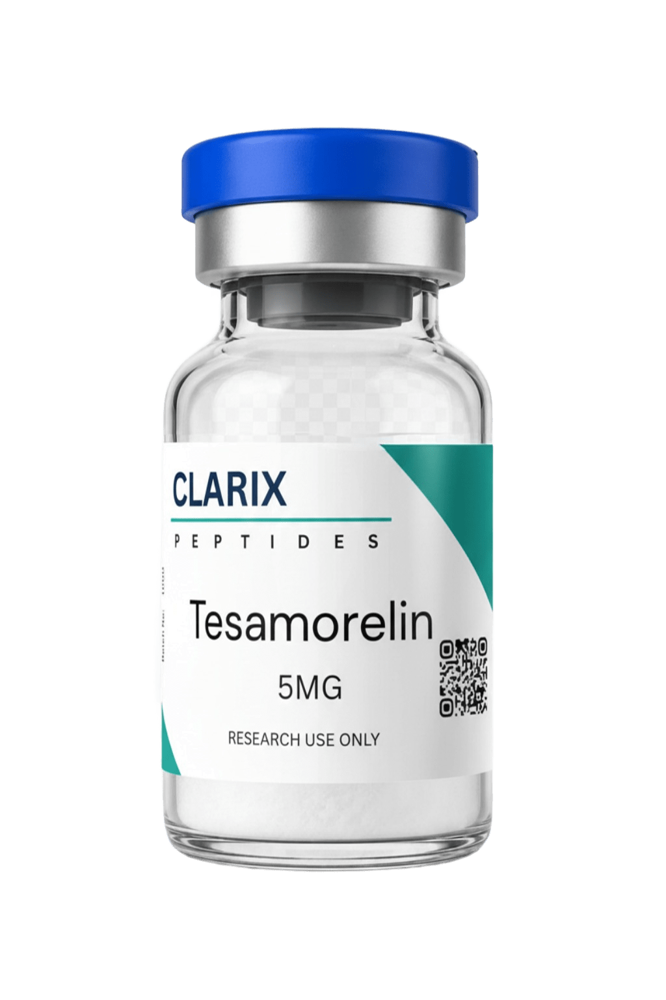

Tesamorelin occupies a distinctive position in the peptide research landscape as the only synthetic GHRH analogue to have completed the full drug development pathway to clinical approval. Its well-documented mechanism and extensive research literature make it one of the most studied growth hormone-axis peptides available. For researchers in the UK working with GHRH analogues, this guide covers the key facts about tesamorelin peptide, its documented effects, dosage data, and quality considerations when sourcing.
What Is Tesamorelin?
Tesamorelin is a synthetic analogue of growth hormone-releasing hormone (GHRH). It consists of the complete 44-amino acid sequence of endogenous GHRH, with a trans-3-hexenoic acid modification at the N-terminus. This structural modification substantially improves the compound's stability and extends its half-life compared to native GHRH, which is rapidly degraded by dipeptidyl peptidase-4 (DPP-4) and other circulating enzymes.
The compound selectively stimulates GH secretion from anterior pituitary somatotrophs via binding to the GHRH receptor. Crucially, this mechanism preserves the pulsatile nature of GH release, as tesamorelin amplifies the physiological GH pulses rather than producing a continuous, supraphysiological GH state. This selectivity means it does not suppress other pituitary hormones and is a precise tool for GH-axis research.
Tesamorelin Benefits: What the Research Shows
Visceral Adipose Tissue Reduction
The most extensively documented tesamorelin benefits in the clinical literature relate to visceral adipose tissue (VAT) reduction. Two pivotal Phase 3 trials in HIV-infected patients with lipodystrophy demonstrated that daily tesamorelin administration produced significant reductions in trunk fat compared to placebo. These findings formed the basis of approval by the US FDA under the name Egrifta. The mechanism is understood to involve GH-stimulated lipolysis in visceral adipocytes, which are particularly sensitive to GH signalling.
GH-Axis Research
Beyond its VAT effects, tesamorelin is widely used in research models investigating the GH-IGF-1 axis. Its ability to reliably stimulate GH pulses while preserving pituitary physiology makes it a preferred tool for studying somatotroph function, GH secretion dynamics, and downstream IGF-1 effects on various tissue types. The clean receptor selectivity minimises off-target signal confounding in GH-axis experiments.
Metabolic and Body Composition Research
Studies have also examined tesamorelin's effects on broader metabolic parameters. Improvements in triglyceride levels, trunk fat-to-limb fat ratios, and insulin-like growth factor-1 concentrations have been documented alongside the primary VAT reduction findings. These secondary observations have expanded interest in tesamorelin as a tool for metabolic research beyond the original HIV lipodystrophy context.
Tesamorelin Dosage: Published Data
The tesamorelin dosage used in the pivotal HIV lipodystrophy trials was 2mg administered as a once-daily subcutaneous injection. This 2mg daily dose is the most consistently reported in the literature and is the reference dose for the majority of tesamorelin research. The 2mg dose reliably stimulates GH secretion within approximately 15 to 30 minutes of administration, with the peak GH pulse occurring in this window and returning to baseline within 2 to 3 hours.
Some research contexts have explored higher concentrations, and Clarix Peptides supplies tesamorelin in both 2mg and 5mg formats to accommodate different experimental designs. The 5mg format is suitable for studies requiring higher working stock concentrations or multiple experimental preparations from a single vial.
Tesamorelin Side Effects: Research Data
The tesamorelin side effect profile from published clinical data includes events consistent with GH-axis activation. The most commonly reported adverse events in the HIV lipodystrophy trials were:
- Injection site reactions (erythema, pruritus, pain at site)
- Peripheral oedema and fluid retention, consistent with GH-mediated sodium retention
- Joint pain and arthralgias, a class effect of GH stimulation
- Glucose metabolism changes, including increased fasting glucose in a subset of participants
- Paraesthesia (tingling or numbness), also consistent with GH-class effects
Discontinuation rates due to adverse events were low in the pivotal trials. The glucose metabolism effects are an important consideration for any research protocol involving subjects with pre-existing metabolic conditions, as GH stimulation can reduce insulin sensitivity.

Tesamorelin Available from Clarix Peptides UK
HPLC-verified, 99%+ purity. Certificate of Analysis included. Available in 2mg and 5mg. Fast UK dispatch.
Buying Tesamorelin in the UK
Tesamorelin is available in the UK as a research-grade peptide compound. It is not licensed as a medicine in the UK outside of its approved indication in specific patient groups in jurisdictions where Egrifta is marketed. For research purposes, buy tesamorelin from suppliers who provide HPLC purity verification, third-party COA documentation, and can confirm the compound's molecular identity by mass spectrometry.
Clarix Peptides supplies research-grade tesamorelin peptide UK from UK stock, with same-day dispatch on orders placed before 2pm. Each batch is independently tested before dispatch, with the COA available for download with your order.